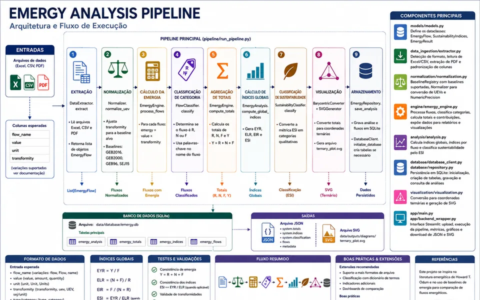
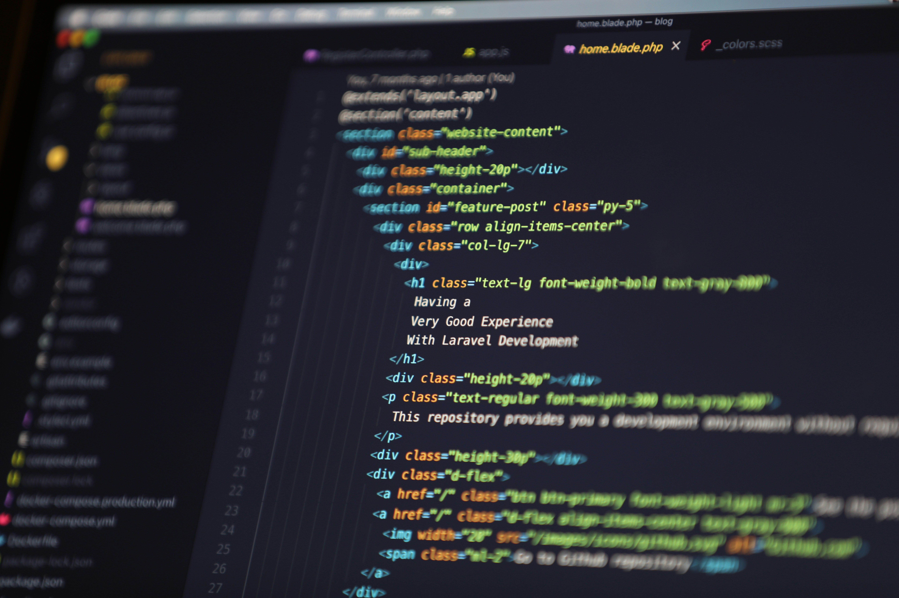
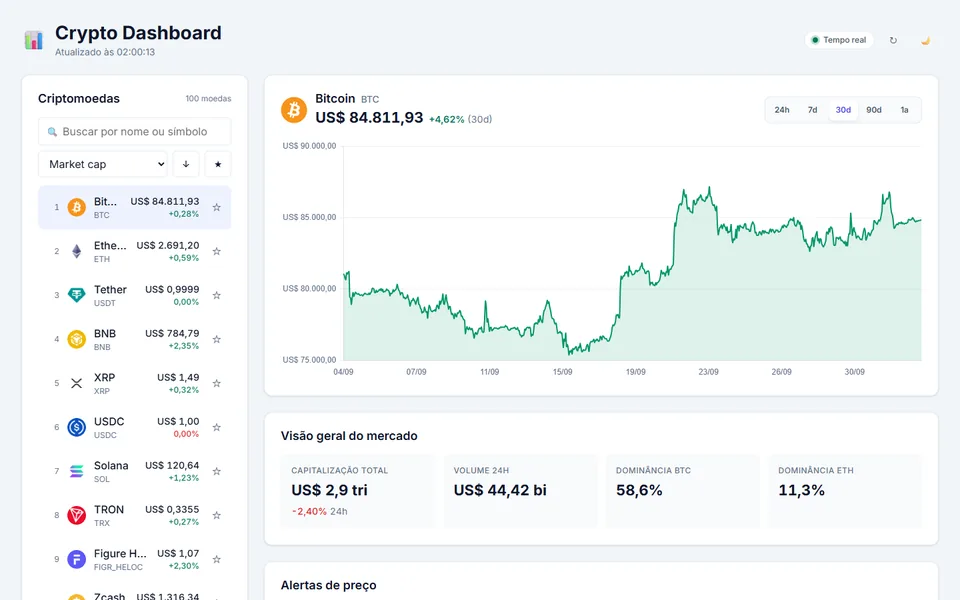
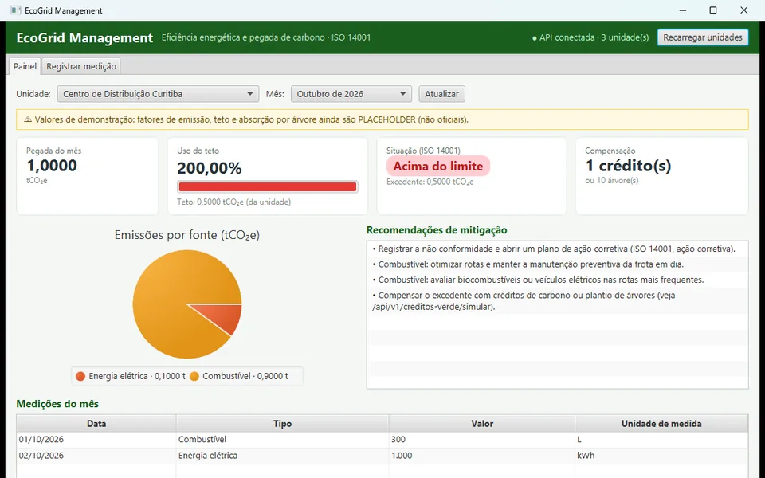

Emergy Analysis
Iniciação CientíficaFerramenta científica de avaliação emergética: calcula a emergia de cada fluxo, os totais R/N/F e os índices de sustentabilidade (EYR, ELR, EIR, ESI), com CLI e app web.

HyperText Markup Language, é a espinha dorsal de toda a World Wide Web.
Linguagem de programação para desenvolvimento web dinâmico e interativo.
Linguagem versátil para desenvolvimento back-end, automação, análise de dados e machine learning.
Estilização avançada, design consistentes e otimização de performance visual.
Aplicações com renderização eficiente, interfaces responsivas e lógica modular.
Experiência no uso do Git para gerenciar versões de código!

Ferramenta científica de avaliação emergética: calcula a emergia de cada fluxo, os totais R/N/F e os índices de sustentabilidade (EYR, ELR, EIR, ESI), com CLI e app web.

Dashboard de criptomoedas em tempo real, com preços via WebSocket da Binance, gráficos históricos, favoritos e alertas de preço.

Plataforma de eficiência energética: uma API REST calcula a pegada de carbono (tCO₂e) das empresas, audita o teto de emissões e sugere ações alinhadas à ISO 14001.
Estou aberto a vagas de Engenharia de Software e Ciência de Dados. Fale comigo pelo canal que preferir.